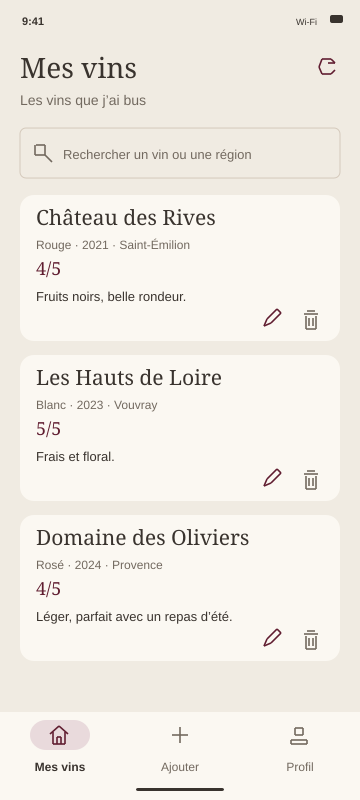
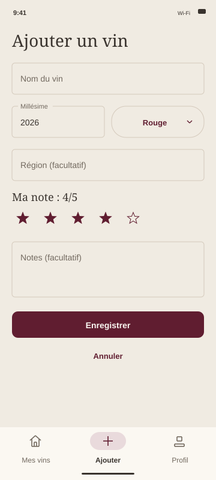

Oral de développement Android
Grappe
Carnet personnel de dégustation
- Rechercher et gérer les vins dégustés
- Conserver une note et un commentaire
- Consulter les statistiques du carnet
Maquette · Bibliothèque
Mes vins
- Recherche par nom ou région
- Millésime, couleur et note sur chaque fiche
- Modification et suppression avec confirmation

Maquette · Formulaire
Ajouter un vin
- Nom, millésime, couleur et note sur 5
- Région et commentaire facultatifs
- Formulaire commun à l’ajout et à la modification

Maquette · Compte
Mon profil
- Nombre de vins et de régions
- Moyenne des notes
- Modification du nom et de la photo

Architecture Android
Du formulaire au stockage
Kotlin · langage de l’application
Jetpack Compose
Interface du formulaire
ViewModel
État de l’écran et validation
Repository
Accès aux données du carnet
Démo locale · Stockage sur le téléphone
Cloud · Supabase pour le compte et les vins
Tests unitaires
Un cas précis pour vérifier une règle du code.
5 · Validation
- Fiche valide acceptée
- Champs invalides refusés
2 · Statistiques
- Carnet vide sans moyenne
- Régions regroupées, autres comptes exclus
7/7 réussis par variante (démo et cloud).